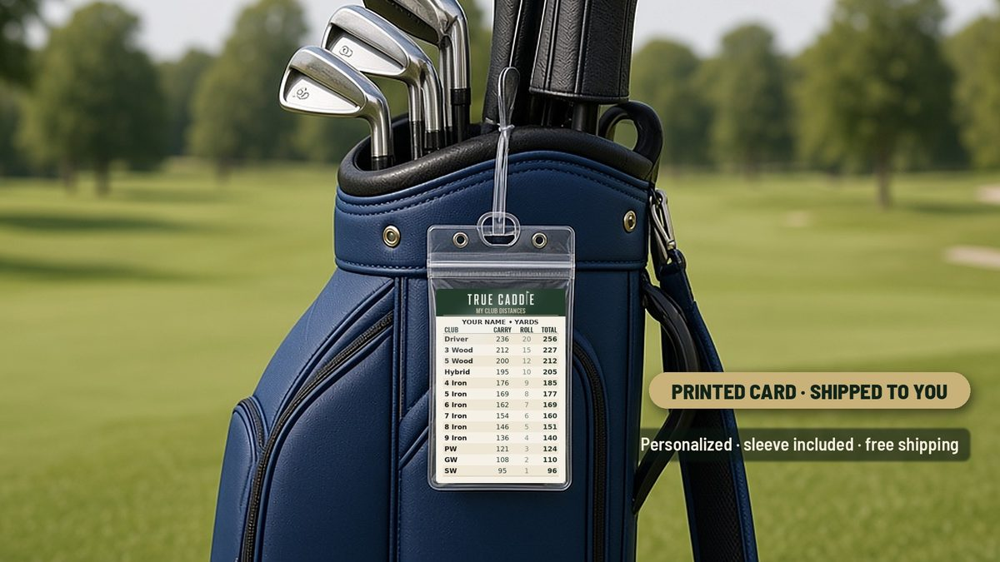

Your yards. Your club. Swing.
Enter the yards to your target. True Caddie picks the club from your own bag and says it out loud in a calm caddie voice.

True Caddie Golf for iPhone
See True Caddie in action
Set your bag once
Check the clubs you carry and enter how far you hit each one. Every club starts with a sensible default, including a Gap wedge, and your bag is saved on your phone.
Enter the yards, get the club
Type the yards to your target and get a club from your own numbers. A club can be picked when the shot is within 3 yards of its number.
Wind, lie and slope in one tap
Into the wind or helping? In the sand, rough, or a flyer lie? Uphill or downhill? One tap steps through the clubs you actually carry.
Short shots made clear
Inside wedge range you get the wedge plus "Three-quarter swing." or "Half swing.", with a swing thought to match.
A calm voice over your shoulder
A calm caddie voice speaks the yards and the club, then a short, steady word like "Trust it."
Private by design
No account. No sign-in. Data Not Collected.
Also from TrueCaddie
Personalized Golf Bag Distance Card

Your own club yards, printed on a card that clips to your bag.
$15, free shipping
Questions
How much does it cost?
$9.99, one time. No subscription.
What phones does it work on?
Available now on the App Store for iPhone. Android is coming later.
Do I need an account?
No. There's no account and no sign-in.
How does it work?
Enter your own club yards once. Then type the yards to your target, and a calm caddie voice tells you the club and the swing.
Does it collect my data?
No. The App Store privacy label is Data Not Collected.